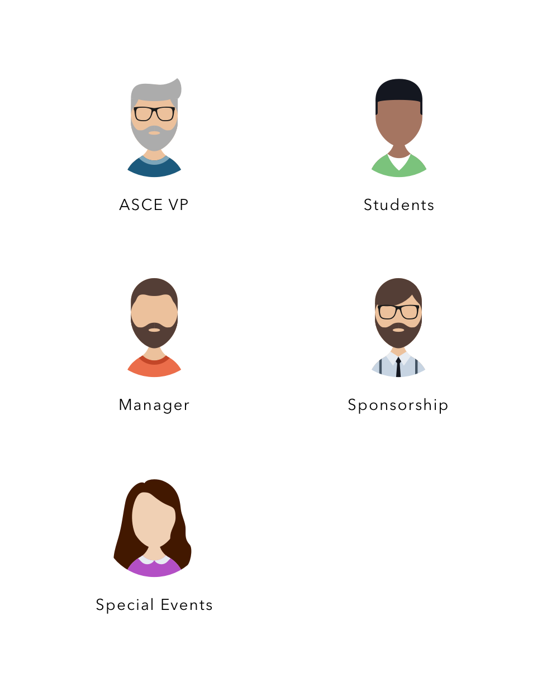
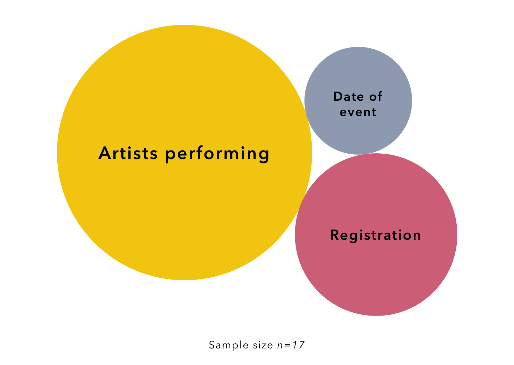

Timeline: Mar - Apr 2018
Project Type: Part time job
My Role: Webmaster
Tools: VSCode
Skills: Design, Web Development
The Sun God Festival is a
daylong music and arts festival at UC San Diego. Named as one of Live Nation’s "Top 5 College Concerts That
Should Be Actual Festivals", it is one of the largest university events in the world, bringing in over 20,000
attendees each year.
I was the webmaster for UCSD’s Associated Students Graphic Studio, which produced content for all
extracurricular events around campus. I was responsible for a variety of websites related to recreational
concerts and events.
This case study goes over the 2018 Sun God Festival, where I collaborated with one visual designer to build a
refreshed website. I worked within the requirements set by the events coordination team to design & implement
an engaging user experience.
Stakeholders

To set some more context, there is a new theme for the festival every year. The year before carried a refreshing beach vibe.
2017 Sun God Festival

There were a few requirements from the events coordination team. The ASGS Manager wanted a jungle theme. Both the Special Events Director and ASCE VP wanted an emphasis on safety because of the increasing number of student overdoses in previous years. The Sponsorship Director wanted a redesigned student engagement activity to increase the awareness of the festival.
Jungle Theme
Safety
Engagement Activity

I interviewed a few students around campus to understand how they felt about prior year’s website and what they thought were the most essential features.
User Data
I ran a quick n’ scrappy AB test with random students around campus (n=11). Then I presented all of the data to the ASCE board with suggestions on which designs to move forward with.
Homepage

What users thought:
- Liked the rotating carousel for the artists
- Wanted a bigger emphasis on the countdown/date
- Wanted performance set times
Although the students wanted it, the events board pressed for a lower emphasis on the artists on the homepage. They said it would take attention away from the apparel and sun god babies.
Safety Tips
What users thought:
- Classic top right toast felt too similar to a notification
- “The persistent bottom would be annoying… I’d try to ignore it after getting used to it”
- Bottom toast would be distracting
- “Is this necessary? Don’t we need to do safety training when we register?”
The students weren’t too fond of the safety tips but it was a firm requirement. The team had initially wanted the persistent bottom nav design with rotating safety tips but after hearing the feedback, everyone aligned on the bottom toast.
Engagement Activity

What users thought:
- Raffle ticket design was too dependent on luck. “What if no one ever found the baby holding the top prize?”
- Would trade babies if they had to match certain words for prizes
- Would google the “Fun Fact” questions so the difficulty of the questions didn’t matter
In the previous year, returning more babies resulted in a better prize. The team liked the “Letters” design because they thought there was potential for publicity if students used social media to trade the babies.
I used Bootstrap for its css framework and JQuery for javascript event handling. I also used Shopify’s API to embed an online shop into the apparel section of the website. The homepage’s carousel was created with carouFredSel, an open source project by Verti Studio.
Frameworks and libraries

I’m stoked to have had this opportunity to work on a website seen by so many of my peers. The A.S. Graphic Studio was full of extremely bright and friendly colleagues. We had weekly potlucks, birthday celebrations, costume parties, and even field trips to local design agencies. I also enjoyed seeing how the inner workings of coordinating an event looked like. Thank you for reading.
Stakeholder avatars were designed by Freepik from FlatIcon.com.

EventQR
A web app that lets users create & scan events encrypted into a QR code, which can be synced onto their Google Calendar.

Workday
Redesigning the global conclusion interface and mobile animations.